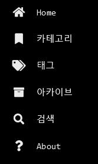
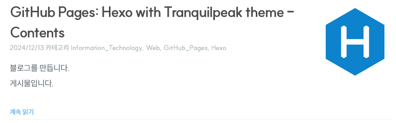

GitHub Pages: Hexo with Tranquilpeak theme - Contents
Contents
Introduction
Hexo에 Tranquilpeak 테마를 설치하고 Utterances까지 추가해서 기반을 완성했습니다.
이제 내용을 채워넣을 차례입니다.
Config
<folder>/_config.yml에서 post_asset_folder값을 true로 설정합니다.hexo-cli로 게시물을 생성하면 자동으로 게시물의 파일 이름과 같은 이름을 가진 폴더를 생성합니다. 그 폴더에 해당 포스트에서 사용할 첨부 파일을 전부 넣어두면 됩니다.
Scaffolds
<folder>/scaffolds 폴더를 열면 draft.md, page.md, post.md 파일이 보입니다.
이 파일들에 내용을 작성해두면 hexo-cli로 게시물을 생성할 때 작성해둔 내용을 불러오므로 매번 형식을 바꾸는게 아니라면 좀 더 편하게 게시물을 작성할 수 있습니다.
아직 익숙해지지 않은 Markdown 예시를 적어둬서 사용법을 매번 검색하는 번거로움을 줄일 수도 있겠습니다.
Front-matter
scaffolds 폴더의 파일을 하나 열어보면, ---이 두 줄 있고 그 사이에 내용이 몇 줄 적혀있습니다. 이것을 Front-matter이라 합니다.Front-matter은 게시물의 설정을 담당하는 부분으로, 카테고리, 태그 등의 옵션들이 들어갑니다.
---
title: "GitHub Pages: Hexo with Tranquilpeak theme - Contents"
categories:
- Information_Technology
- Web
- GitHub_Pages
- Hexo
tags:
- Hexo
- Tranquilpeak
thumbnailImage: hexo-logo-avatar.png
comment: true
abbrlink: 57643
date: 2024-12-13 13:50:48
---저는 많이 사용하진 않았지만, 공식 문서를 읽어보면 지원하는 기능이 많습니다.
Hexo 공식 문서와 Tranquilpeak 공식 문서를 보면서 원하는 기능을 추가해나가는데, 공식 문서 간에 내용이 충돌하면 둘 다 사용해보고 작동하는 쪽을 찾아서 써야 합니다.새 게시물에 thumbnail을 추가했을 때 로컬에서 보이지 않는데, 정상입니다.
GitHub Pages에 배포가 되어야 제대로 출력됩니다.
thumbnail의 경우 절대 경로를 사용하기 때문이라고 합니다.
Draft
Draft는 초안을 의미합니다. 기본적으로는 내용이나 길이에 상관없이 배포되지 않으므로[1] 완성이 덜 됐거나, 발행 예정일이 아직 멀었다거나 같은 이유 등으로 공개할 준비가 되지 않은 포스트를 작성할 때 유용합니다.hexo new draft "draft_filename"으로 Draft 파일을 생성하는데, 이 때 scaffolds/draft.md에 작성했던 내용이 자동으로 추가됩니다.hexo publish <draft_filename> 명령어로 Draft를 Post로 발행할 수 있습니다. 명령을 실행하면 scaffolds/post.md의 내용을 읽어서 Front-matter의 내용을 Draft 파일에 반영합니다. 이 때 충돌하는 설정이 있을 경우 Draft 파일의 내용을 우선하고, Draft 파일에 없는 설정이 scaffolds/post.md에 있다면 그 설정을 추가한 뒤 _posts 폴더로 파일을 옮겨서 발행을 마무리합니다. 파일 생성 시간 대신 발행 시간을 기록하고 싶다면 date 설정을 post.md 파일에만 남겨놓으면 되겠습니다.
[1] Hexo 서버를 실행할 때
--draft옵션을 사용하면 로컬에서 Draft를 볼 수 있고,<folder>/_config.yml파일에서render_drafts의 값을true로 설정하고 배포하면 GitHub Pages에서도 보입니다. ↩
Post
Post는 공개할 준비가 된 게시물입니다.hexo new post "post_filename"으로 Post 파일을 생성하는데, 이 때 scaffolds/post.md에 작성했던 내용이 자동으로 추가됩니다. 기본 설정[2]을 바꾸지 않았다면 hexo new "post_filename"만으로도 Post 파일이 생성됩니다.
[2]
<folder>/_config.yml의default_layout이고, 기본값은 post입니다.default_layout의 값을 draft나 page로 바꾸고hexo new "filename"을 실행하면 설정한 레이아웃이 생성됩니다. ↩
Page
Page는 독립적이고 거의 변경되지 않는 내용을 작성할 때 사용됩니다. 주로 약력이나 연락처와 같이 자주 변경되지 않는 정적인 정보를 담습니다. <folder>/themes/tranquilpeak/_config.yml이나 레이아웃 등을 수정해서 표시하려는 위치에 작성한 Page를 추가해주지 않으면 블로그에 표시되지 않습니다.

사이드바의 내용이 이 GitHub Pages에서 쉽게 찾을 수 있는 페이지들입니다.
Writing
Markdown 문법을 사용해서 작성하면 되는데, Hexo와 Tranquilpeak 테마에서 추가적으로 지원하는 기능도 있습니다.
제가 일단 쓰고 시작하는 것으로 <!-- excerpt --> 가 있습니다. <!-- excerpt --> 의 위쪽에 작성한 내용은 글 목록에만 표시되고, 본문에는 표시되지 않습니다. 저는 내용을 간략하게 알리기 위해 <!-- excerpt -->를 사용합니다.

글 목록만을 위한 내용을 작성하기 싫은데 글 목록에서 글 내용 전부를 보여주고 싶진 않다면<!-- more -->을 사용할 수 있습니다.
글 목록에서 보여주고 싶은 내용을 작성하고 아래에 <!-- more -->을 붙인후 계속 작성하면, <!-- more --> 이후에 작성한 내용은 글 목록에서 보이지 않습니다. 본문에 접속해야 나머지를 읽을 수 있습니다.
블로그를 그만둘때까지 이미지를 포함한 포스트를 단 한번도 작성하지 않을 수 있을까요?
이미지를 첨부할 때 다양한 설정을 추가해서 올릴 수 있습니다.{% image [classes] group:group-name /path/to/image [/path/to/thumbnail] [width of thumbnail] [height of thumbnail] [title text] %}
반드시 포함해야 하는 부분은 {% image "/path/to/image" %} 뿐이고, 나머지는 전부 옵션입니다.
동영상도 첨부할 수 있습니다.{% video [classes] videoURL [Optional Poster (Thumbnail) URL] [Width] [Caption] %}
반드시 포함해야 하는 부분은 {% video "videoURL" %} 뿐이고, 나머지는 전부 옵션입니다.
Markdown이나 Hexo 공식 문서, Tranquilpeak 테마 공식 문서를 전부 붙여넣을 수는 없으니 원하는 기능이 있다면 찾아보면서 작성하시면 되겠습니다.
꾸준하게 쓰다 보면 언젠가는 익숙해지겠죠.
Conclusion
게시물을 주제로 한 게시물을 작성했습니다.